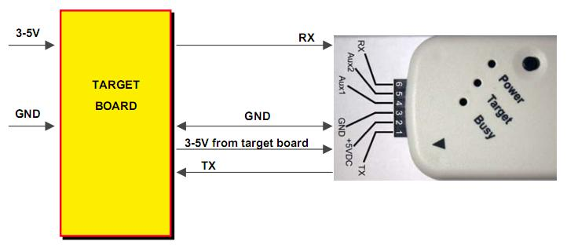
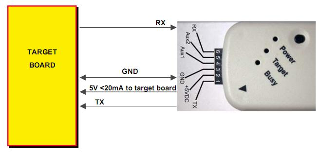
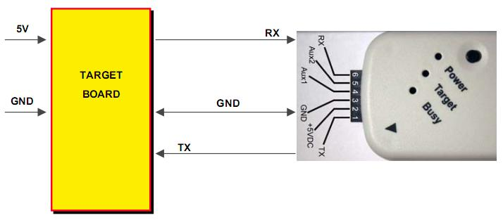
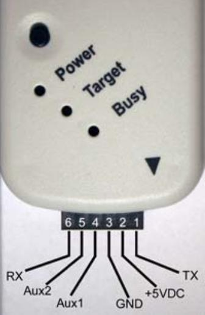

Introduction
The PICKit Serial Analyzer (PKSA) is an easy way to connect the UART of your PIC® microcontroller to your PC. All of the required steps are handled by the PICKit Serial Loader Utility provided with the framework.
Maximum Speed: 115.2 kbps
Voltage Level: Depends on the voltage applied to pin #2. Valid range is from 3-5V.
Optional 5V (<20mA) power supply from the PICKit Serial Analyzer.
Changing Your PICKit Serial Analyzer into an RS-232 Converter
-
Press the button on the PICKit Serial Analyzer when connecting to PC's USB to enter
Bootloader Mode.
(The 'Target' and 'Busy' LEDs should be flashing quickly.)
-
Open the PICKit Serial Loader Utility provided by the framework
-
Follow the on-screen instructions
Using your RS-232 Converter
-
Unplug and replug the PKSA. Press and hold the black PKSA button to toggle the on-board 5V power supply.
-
Warning: There is no protection provided on this power supply. Maximum current is 20mA.
-
LED Status Legend:
-
Target LED On: Transmission in progress
-
Busy LED On: Reception was successful

Example schematic connecting the PKSA with an external power supply

Example schematic of PKSA supplying power to the board

Example schematic of connecting PKSA with an external 5V power supply. Notice - no V<sub>DD</sub> connection required.
PICKit Serial Analyzer Pin Configuration
-
The PC's TX line. The PIC's RX line. (Marked with an arrow)
-
VDD : 3-5V
-
VSS
-
Aux1 : not used in RS232 configuration
-
Aux2 : not used in RS232 configuration
-
The PC's RX line. The PIC's TX line.
